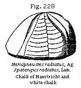
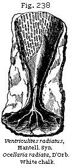
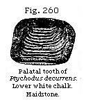
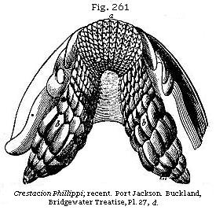
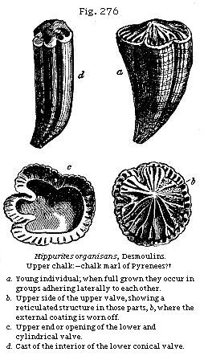

{kind=link}
{kind=link}
{kind=link}
{kind=link}
{kind=link}
{kind=link}
![Fig. 240: Micraster cor-angumum. White chalk. Fig. 241: Galerites albogalerus. White chalk. Fig. 242: Marsupites Milleri. White chalk. Fig. 243: Terebratulina striata. Upper white chalk. Fig. 244: Rhynchonella octoplicata. Upper white chalk. Fig. 245: Magas pumila. Upper white chalk. Fig. 246: Terebratula carnea. Upper white chalk. Fig. 247: Terebratula biplicata. Upper cretaceous. Fig. 248: Crania Parisiensis. Inferior or attached valve. Upper white chalk. Fig. 249: Peten Beaveri. Lower white chalk and chalk marl. Fig. 250: Lima spinosa. Upper white chalk.](images2/fig240.jpg)
The Student’s Elements of Geology
Lapse of Time between Cretaceous and Eocene Periods. — Table of successive Cretaceous Formations. — Maestricht Beds. — Pisolitic Limestone of France. — Chalk of Faxoe. — Geographical Extent and Origin of the White Chalk. — Chalky Matter now forming in the Bed of the Atlantic. — Marked Difference between the Cretaceous and existing Fauna. — Chalk-flints. — Pot-stones of Horstead. — Vitreous Sponges in the Chalk. — Isolated Blocks of Foreign Rocks in the White Chalk supposed to be ice-borne. — Distinctness of Mineral Character in contemporaneous Rocks of the Cretaceous Epoch. — Fossils of the White Chalk. — Lower White Chalk without Flints. — Chalk Marl and its Fossils. — Chloritic Series or Upper Greensand. — Coprolite Bed near Cambridge. — Fossils of the Chloritic Series. — Gault. — Connection between Upper and Lower Cretaceous Strata. — Blackdown Beds. — Flora of the Upper Cretaceous Period. — Hippurite Limestone. — Cretaceous Rocks in the United States.
We have treated in the preceding chapters of the Tertiary or Cainozoic strata, and have next to speak of the Secondary or Mesozoic formations. The uppermost of these last is commonly called the chalk or the cretaceous formation, from creta, the latin name for that remarkable white earthy limestone, which constitutes an upper member of the group in those parts of Europe where it was first studied. The marked discordance in the fossils of the tertiary, as compared with the cretaceous formations, has long induced many geologists to suspect that an indefinite series of ages elapsed between the respective periods of their origin. Measured, indeed, by such a standard, that is to say, by the amount of change in the Fauna and Flora of the earth effected in the interval, the time between the Cretaceous and Eocene may have been as great as that between the Eocene and Recent periods, to the history of which the last seven chapters have been devoted. Several deposits have been met with here and there, in the course of the last half century, of an age intermediate between the white chalk and the plastic clays and sands of the Paris and London districts, monuments
which have the same kind of interest to a geologist which certain medieval records excite when we study the history of nations. For both of them throw light on ages of darkness, preceded and followed by others of which the annals are comparatively well-known to us. But these newly-discovered records do not fill up the wide gap, some of them being closely allied to the Eocene, and others to the Cretaceous type, while none appear as yet to possess so distinct and characteristic a fauna as may entitle them to hold an independent place in the great chronological series.
Among the formations alluded to, the Thanet Sands of Prestwich have been sufficiently described in the last chapter, and classed as Lower Eocene. To the same tertiary series belong the Belgian formations, called by Professor Dumont, Landenian. On the other hand, the Maestricht and Faxoe limestones are very closely connected with the chalk, to which also the Pisolitic limestone of France is referable.
Classification of the Cretaceous Rocks.—The cretaceous group has generally been divided into an Upper and a Lower series, the Upper called familiarly the chalk, and the Lower the greensand; the one deriving its name from the predominance of white earthy limestone and marl, of which it consists in a great part of France and England, the other or lower series from the plentiful mixture of green or chloritic grains contained in some of the sands and cherts of which it largely consists in the same countries. But these mineral characters often fail, even when we attempt to follow out the same continuous subdivisions throughout a small portion of the north of Europe, and are worse than valueless when we desire to apply them to more distant regions. It is only by aid of the organic remains which characterise the successive marine subdivisions of the formation that we are able to recognise in remote countries, such as the south of Europe or North America, the formations which were there contemporaneously in progress. To the English student of geology it will be sufficient to begin by enumerating those groups which characterise the series in this country and others immediately contiguous, alluding but slightly to those of more distant regions. In the table (p. 283) it will be seen that I have used the term Neocomian for that commonly called “Lower Greensand;” as this latter term is peculiarly objectionable, since the green grains are an exception to the rule in many of the members of this group even in districts where it was first studied and named.
| UPPER CRETACEOUS OR CHALK PERIOD. | |
|
|
| LOWER CRETACEOUS OR NEOCOMIAN. | |
| Marine | Fresh-water |
| Wealden Beds (upper part). | |
Maestricht Beds.—On the banks of the Meuse, at Maestricht, reposing on ordinary white chalk with flints, we find an upper calcareous formation about 100 feet thick, the fossils of which are, on the whole, very peculiar, and all distinct from tertiary species. Some few are of species common to the inferior white chalk, among which may be mentioned Belemnitella mucronata (Fig. 226) and Pecten quadricostatus, a shell regarded by many as a mere variety of P. quinquecostatus (see Fig. 270). Besides the Belemnite there are other genera, such as Baculites and Hamites, never found in strata newer than the cretaceous, but frequently met with in these Maestricht beds. On the other hand, Voluta, Fasciolaria, and other genera of univalve shells, usually met with only in tertiary strata, occur.
The upper part of the rock, about 20 feet thick, as seen in St. Peter’s Mount, in the suburbs of Maestricht, abounds in corals and Bryozoa, often detachable from the matrix; and these beds are succeeded by a soft yellowish limestone 50 feet thick, extensively quarried from time immemorial for building. The stone below is whiter, and contains occasional nodules of grey chert or chalcedony.
M. Bosquet, with whom I examined this formation (August, 1850), pointed out to me a layer of chalk from two to four inches thick, containing green earth and numerous encrinital stems, which forms the line of demarkation between the strata containing the fossils peculiar to Maestricht and
* For particulars of structure see p. 318.
the white chalk below. The latter is distinguished by regular layers of black flint in nodules, and by several shells, such as Terebratula carnea (see Fig. 246), wholly wanting in beds higher than the green band. Some of the organic remains, however, for which St. Peter’s Mount is celebrated, occur both above and below that parting layer, and, among others, the great marine reptile called Mosasaurus (see Fig. 227), a saurian supposed to have been 24 feet in length, of which the entire skull and a great part of the skeleton have been found. Such remains are chiefly met with in the soft freestone, the principal member of the Maestricht beds. Among the fossils common to the Maestricht and white chalk may be instanced the echinoderm, Fig. 228.
I saw proofs of the previous denudation of the white chalk exhibited in the lower bed of the Maestricht formation in Belgium, about 30 miles S.W. of Maestricht, at the village of Jendrain, where the base of the newer deposit consisted chiefly of a layer of well-rolled, black chalk-flint pebbles, in the midst of which perfect specimens of Thecidea papillata and Belemnitella mucronata are imbedded. To a geologist accustomed in England to regard rolled pebbles of chalk-flint as a common and distinctive feature of tertiary beds of different ages, it is a new and surprising phenomenon to behold strata made up of such materials, and yet to feel no doubt that they were
accumulated in a sea in which the belemnite and other cretaceous mollusca flourished.
Pisolitic Limestone of France.—Geologists were for many years at variance respecting the chronological relations of this rock, which is met with in the neighbourhood of Paris, and at places north, south, east, and west of that metropolis, as between Vertus and Laversines, Meudon and Montereau. By many able palæontologists the species of fossils, more than fifty in number, were declared to be more Eocene in their appearance than Cretaceous. But M. Hébert found in this formation at Montereau, near Paris, the Pecten quadricostatus, a well-known Cretaceous species, together with some other fossils common to the Maestricht chalk and to the Baculite limestone of the Cotentin, in Normandy. He therefore, as well as M. Alcide d’Orbigny, who had carefully studied the fossils, came to the opinion that it was an upper member of the Cretaceous group. It is usually in the form of a coarse yellowish or whitish limestone, and the total thickness of the series of beds already known is about 100 feet. Its geographical range, according to M. Hébert, is not less than 45 leagues from east to west, and 35 from north to south. Within these limits it occurs in small patches only, resting unconformably on the white chalk.
The Nautilus Danicus, Fig. 230, and two or three other species found in this rock, are frequent in that of Faxoe, in Denmark, but as yet no Ammonites, Hamites, Scaphites, Turrilites, Baculites, or Hippurites have been met with. The proportion of peculiar species, many of them of tertiary aspect, is confessedly large; and great aqueous erosion suffered by the white chalk, before the pisolitic limestone was formed, affords an additional indication of the two deposits being widely separated in time. The pisolitic formation, therefore, may eventually prove to be somewhat more intermediate in date between the secondary and tertiary epochs than the Maestricht rock.
Chalk of Faxoe.— In the island of Seeland, in Denmark, the newest member of the chalk series, seen in the sea-cliffs at Stevensklint resting on white chalk with flints, is a yellow limestone, a portion of which, at Faxoe, where it is used as a building stone, is composed of corals, even more conspicuously than is usually observed in recent coral reefs. It has been quarried to the depth of more than 40 feet, but its thickness is unknown. The imbedded shells are chiefly casts, many of them of univalve mollusca, which are usually very rare in the white chalk of Europe. Thus, there are two species of Cypræa, one of Oliva, two of Mitra, four of the genus
Cerithium, six of Fusus, two of Trochus, one of Patella, one of Emarginula, etc.; on the whole, more than thirty univalves, spiral or patelliform. At the same time, some of the accompanying bivalve shells, echinoderms, and zoophytes, are specifically identical with fossils of the true Cretaceous series. Among the cephalopoda of Faxoe may be mentioned Baculites Faujasii (Fig. 229), and Belemnitella mucronata (Fig. 226), shells of the white chalk. The Nautilus Danicus (see Fig. 230) is characteristic of this formation; and it also occurs in France in the calcaire pisolitique of Laversin (Department of Oise). The claws and entire skull of a small crab, Brachyurus rugosus (Schlott.), are scattered through the Faxoe stone, reminding us of similar crustaceans inclosed in the rocks of modern coral reefs. Some small portions of this coralline formation consist of white earthy chalk.
Composition, Extent and Origin of the White Chalk.—The highest beds of chalk in England and France consist of a pure, white, calcareous mass, usually too soft for a building-stone, but sometimes passing into a more solid state. It consists, almost purely, of carbonate of lime; the stratification is often obscure, except where rendered distinct by interstratified layers of flint, a few inches thick, occasionally in continuous beds, but oftener in nodules, and recurring at intervals generally from two to four feet distant from each other. This upper chalk is usually succeeded, in the descending order, by a great mass of white chalk without flints, below which comes the chalk marl, in which there is a slight admixture of argillaceous matter. The united thickness of the three divisions in the south of England equals, in some places, 1000 feet. The section in Fig. 231 will show the manner in which the white chalk extends from England into France, covered by the tertiary strata described in former chapters, and reposing on lower cretaceous beds.
The area over which the white chalk preserves a nearly homogeneous aspect is so vast, that the earlier geologists despaired of discovering any analogous deposits of recent date. Pure chalk, of nearly uniform aspect and composition, is met with in a north-west and south-east direction, from the north of Ireland to the Crimea, a distance of about 1140 geographical miles, and in an opposite direction it extends from the south of Sweden to the south of Bordeaux, a distance of about 840 geographical miles. In Southern Russia, according to Sir R. Murchison, it is sometimes 600 feet thick, and retains the same mineral character as in France and England, with the same fossils, including Inoceramus Cuvieri, Belemnitella mucronata, and Ostrea vesicularis (Fig. 251).
Great light has recently been thrown upon the origin of the unconsolidated white chalk by the deep soundings made in the North Atlantic, previous to laying down, in 1858, the electric telegraph between Ireland and Newfoundland. At depths sometimes exceeding two miles, the mud forming the floor of the ocean was found, by Professor Huxley, to be almost entirely composed (more than nineteen-twentieths of the whole) of minute Rhizopods, or foraminiferous shells of the genus Globigerina, especially the species Globigerina bulloides (see Fig. 232.) the organic bodies next in quantity were the siliceous shells called Polycystineæ, and next to them the siliceous skeletons of plants called Diatomaceæ (Figs. 233, 234, 235), and occasionally some siliceous spiculæ of sponges (Fig. 236) were intermixed. These were connected by a mass of living gelatinous matter to which he has given the name of Bathybius, and which contains abundance of very minute bodies termed Coccoliths and Coccospheres, which have also been detected fossil in chalk.
Sir Leopold MacClintock and Dr. Wallich have ascertained that 95 per cent of the mud of a large part of the North Atlantic consists of Globigerina shells. But Captain Bullock, R.N., lately brought up from the enormous depth of 16,860 feet a white,
viscid, chalky mud, wholly devoid of Globigerinæ. This mud was perfectly homogeneous in composition, and contained no organic remains visible to the naked eye. Mr. Etheridge, however, has ascertained by microscopical examination that it is made up of Coccoliths, Discoliths, and other minute fossils like those of the Chalk classed by Huxley as Bathybius, when this term is used in its widest sense. This mud, more than three miles deep, was dredged up in latitude 20° 19' N., longitude 4° 36' E., or about midway between Madeira and the Cape of Good Hope.
The recent deep-sea dredgings in the Atlantic conducted by Dr. Wyville Thomson, Dr. Carpenter, Mr. Gwyn Jeffreys, and others, have shown that on the same white mud there sometimes flourish Mollusca, Crustacea, and Echinoderms, besides abundance of siliceous sponges, forming, on the whole, a marine fauna bearing a striking resemblance in its general character to that of the ancient chalk.
Popular Error as to the Geological Continuity of the Cretaceous Period.—We must be careful, however, not to overrate the points of resemblance which the deep-sea investigations have placed in a strong light. They have been supposed by some naturalists to warrant a conclusion expressed in these words: “We are still living in the Cretaceous epoch;” a doctrine which has led to much popular delusion as to the bearing of the new facts on geological reasoning and classification. The reader should be reminded that in geology we have been in the habit of founding our great chronological divisions, not on foraminifera and sponges, nor even on echinoderms and corals, but on the remains of the most highly organised beings available to us, such as the mollusca; these being met with, as explained (p. 142), in stratified rocks of almost every age. In dealing with the mollusca, it is those of the highest or most specialised organisation, which afford us the best characters in proportion as their vertical range is the most limited. Thus the Cephalopoda
are the most valuable, as having a more restricted range in time than the Gasteropoda; and these, again, are more characteristic of the particular stratigraphical subdivisions than are the Lamellibranchiate Bivalves, while these last, again, are more serviceable in classification than the Brachiopoda, a still lower class of shell-fish, which are the most enduring of all.
When told that the new dredgings prove that “we are still living in the Chalk Period,” we naturally ask whether some cuttle-fish has been found with a Belemnite forming part of its internal framework; or have Ammonites, Baculites, Hamites, Turrilites, with four or five other Cephalopodous genera characteristic of the chalk and unknown as tertiary, been met with in the abysses of the ocean? Or, in the absence of these long-extinct forms, has a single spiral univalve, or species of Cretaceous Gasteropod, been found living? Or, to descend still lower in the scale, has some characteristic Cretaceous genus of Lamellibranchiate Bivalve, such as the Inoceramus, or Hippurite, foreign to the Tertiary seas, been proved to have survived down to our time? Or, of the numerous genera of lamellibranchiates common to the Cretaceous and Recent seas, has one species been found living? The answer to all these questions is—not one has been found. Even of the humblest shell-fish, the Brachiopods, no new species common to the Cretaceous and recent seas has yet been met with. It has been very generally admitted by conchologists that out of a hundred species of this tribe occurring fossil in the Upper Chalk—one, and one only, Terebratulina striata, is still living, being thought to be identical with Terebratula caput-serpentis. Although this identity is still questioned by some naturalists of authority, it would certainly not surprise us if another lamp-shell of equal antiquity should be met with in the deep sea.
Had it been declared that we are living in the Eocene epoch, the idea would not be so extravagant, for the great reptiles of the Upper Chalk, the Mosasaurus, Pliosaurus, and Pterodactyle, and many others, as well as so many genera of chambered univalves, had already disappeared from the earth, and the marine fauna had made a greater approach to our own by nearly the entire difference which separates it from the fauna of the Cretaceous seas. The Eocene nummulitic limestone of Egypt is a rock mainly composed, like the more ancient white chalk, of globigerine mud; and if the reader will refer to what we have said of the extent to which the nummulitic marine strata, formed originally at the bottom of the sea, now enter into the frame-work of
mountain chains of the principal continents, he will at once perceive that the present Atlantic, Pacific, and Indian Oceans are geographical terms, which must be wholly without meaning when applied to the Eocene, and still more to the Cretaceous Period; so that to talk of the chalk having been uninterruptedly forming in the Atlantic from the Cretaceous Period to our own, is as inadmissible in a geographical as in a geological sense.
Chalk-flints.—The origin of the layers of flint, whether in the form of nodules, or continuous sheets, or in veins or cracks not parallel to the stratification, has always been more difficult to explain than that of the white chalk. But here, again, the late deep-sea soundings have suggested a possible source of such mineral matter. During the cruise of the “Bulldog,” already alluded to, it was ascertained that while the calcareous Globigerinæ had almost exclusive possession of certain tracts of the sea-bottom, they were wholly wanting in others, as between Greenland and Labrador. According to Dr. Wallich, they may flourish in those spaces where they derive nutriment from organic and other matter, brought from the south by the warm waters of the Gulf Stream, and they may be absent where the effects of that great current are not felt. Now, in several of the spaces where the calcareous Rhizopods are wanting, certain microscopic plants, called Diatomaceæ, above mentioned (Figs. 233-235), the solid parts of which are siliceous, monopolise the ground at a depth of nearly 400 fathoms, or 2400 feet.
The large quantities of silex in solution required for the formation of these plants may probably arise from the disintegration of feldspathic rocks, which are universally distributed. As more than half of their bulk is formed of siliceous earth, they may afford an endless supply of silica to all the great rivers which flow into the ocean. We may imagine that, after a lapse of many years or centuries, changes took place in the direction of the marine currents, favouring at one time a supply in the same area of siliceous, and at another of calcareous matter in excess, giving rise in the one case to a preponderance of Globigerinæ, and in the other of Diatomaceæ. These last, and certain sponges, may by their decomposition have furnished the silex, which, separating from the chalky mud, collected round organic bodies, or formed nodules, or filled shrinkage cracks.
Pot-stones.—A more difficult enigma is presented by the occurrence of certain huge flints, or pot-stones, as they are called in Norfolk, occurring singly, or arranged in nearly continuous columns at right angles to the ordinary and
horizontal layers of small flints. I visited in the year 1825 an extensive range of quarries then open on the river Bure, near Horstead, about six miles from Norwich, which afforded a continuous section, a quarter of a mile in length, of white chalk, exposed to the depth of about twenty-six feet, and covered by a bed of gravel. The pot-stones, many of them pear-shaped, were usually about three feet in height and one foot in their transverse diameter, placed in vertical rows, like pillars, at irregular distances from each other, but usually from twenty to thirty feet apart, though sometimes nearer together, as in Figure 237. These rows did not terminate downward in any instance which I could examine, nor upward, except at the point where they were cut off abruptly by the bed of gravel. On breaking open the pot-stones, I found an internal cylindrical nucleus of pure chalk, much harder than the ordinary surrounding chalk, and not crumbling to pieces like it, when exposed to the winter’s frost. At the distance of half a mile, the vertical piles of pot-stones were much farther apart from each other. Dr. Buckland has described very similar phenomena as characterising the white chalk on the north coast of Antrim, in Ireland.*
Vitreous Sponges of the Chalk.—These pear-shaped masses of flint often resemble in shape and size the large sponges
* Geol. Trans., 1st Series, vol. iv, p. 413.
called Neptune’s Cups (Spongia patera, Hardw.), which grow in the seas of Sumatra; and if we could suppose a series of such gigantic sponges to be separated from each other, like trees in a forest, and the individuals of each successive generation to grow on the exact spot where the parent sponge died and was enveloped in calcareous mud, so that they should become piled one above the other in a vertical column, their growth keeping pace with the accumulation of the enveloping calcareous mud, a counterpart of the phenomena of the Horstead pot-stones might be obtained.
Professor Wyville Thomson, describing the modern soundings in 1869 off the north coast of Scotland, speaks of the ooze or chalk mud brought from a depth of about 3000 feet, and states that at one haul they obtained forty specimens of vitreous sponges buried in the mud. He suggests that the Ventriculites of the chalk were nearly allied to these sponges, and that when the silica of their spicules was removed, and was dissolved out of the calcareous matrix, it set into flint.
Boulders and Groups of Pebbles in Chalk.—The occurrence here and there, in the white chalk of the south of England, of isolated pebbles of quartz and green schist has justly excited much wonder. It was at first supposed that they had been dropped from the roots of some floating tree, by which means stones are carried to some of the small coral islands of the Pacific. But the discovery in 1857 of a group of stones in the white chalk near Croydon, the largest of which was syenite and weighed about forty pounds, accompanied by pebbles and fine sand like that of a beach, has been shown by Mr. Godwin Austen to be inexplicable except by the agency of floating ice. If we consider that icebergs now reach 40 degrees north latitude in the Atlantic, and several degrees nearer the equator in the southern hemisphere, we can the more easily believe that even during the Cretaceous epoch, assuming that the climate was milder, fragments of coast ice may have floated occasionally as far as the south of England.
Distinctness of Mineral Character in Contemporaneous Rocks of the Cretaceous Period.—But we must not imagine that because pebbles are so rare in the white chalk of England and France there are no proofs of sand, shingle, and clay having
been accumulated contemporaneously even in European seas. The siliceous sandstone called “upper quader” by the Germans overlies white argillaceous chalk or “pläner-kalk,” a deposit resembling in composition and organic remains the chalk marl of the English series. This sandstone contains as many fossil shells common to our white chalk as could be expected in a sea-bottom formed of such different materials. It sometimes attains a thickness of 600 feet, and, by its jointed structure and vertical precipices, plays a conspicuous part in the picturesque scenery of Saxon Switzerland, near Dresden. It demonstrates that in the Cretaceous sea, as in our own, distinct mineral deposits were simultaneously in progress. The quartzose sandstone alluded to, derived from the detritus of the neighbouring granite, is absolutely devoid of carbonate of lime, yet it was formed at the distance only of four hundred miles from a sea-bottom now constituting part of France, where the purely calcareous white chalk was forming. In the North American continent, on the other hand, where the Upper Cretaceous formations are so widely developed, true white chalk, in the ordinary sense of that term, does not exist.
Fossils of the White Chalk.—Among the fossils of the white chalk, echinoderms are very numerous; and some of the genera, like Ananchytes (see Fig. 239), are exclusively cretaceous. Among the Crinoidea, the Marsupites (Fig. 242) is a characteristic genus. Among the mollusca, the cephalopoda are represented by Ammonites, Baculites (Fig. 229), and Belemnites (Fig. 226). Although there are eight or more species of Ammonites and six of them peculiar to it, this genus is much less fully represented than in each of the other subdivisions of the Upper Cretaceous group.
Among the brachiopoda in the white chalk, the Terebratulæ are very abundant (see Figs. 243-247). With these
are associated some forms of oyster (see Fig. 251), and other bivalves (Figs. 249, 250).
Among the bivalve mollusca, no form marks the Cretaceous era in Europe, America, and India in a more striking manner than the extinct genus Inoceramus (Catillus of Lam.; see Fig. 252), the shells of which are distinguished by a fibrous texture, and are often met with in fragments, having probably been extremely friable.
Of the singular family called Rudistes by Lamarck, hereafter to be mentioned as extremely characteristic of the chalk
of southern Europe, a single representative only (Fig. 253) has been discovered in the white chalk of England.
(Fig. 238), are dispersed indifferently through the soft chalk and hard flint, and some of the flinty nodules owe their irregular forms to inclosed sponges, such as Fig. 259, a, where the hollows in the exterior are caused by the branches of a sponge (Fig. 259, b), seen on breaking open the flint.
The remains of fishes of the Upper Cretaceous formations consist chiefly of teeth belonging to the shark family. Some of the genera are common to the Tertiary formations, and some are distinct. To the latter belongs the genus Ptychodus (Fig. 260), which is allied to the living Port Jackson shark, Cestracion Phillippi, the anterior teeth of which (see Fig. 261, a) are sharp and cutting, while the posterior or palatal teeth (b) are flat (Fig. 260). But we meet with no bones of land-animals, nor any terrestrial or fluviatile shells, nor any plants, except sea-weeds, and here and there a piece of drift-wood. All the appearances concur
in leading us to conclude that the white chalk was the product of an open sea of considerable depth.
The existence of turtles and oviparous saurians, and of a Pterodactyl or winged lizard, found in the white chalk of Maidstone, implies, no doubt, some neighbouring land; but a few small islets in mid-ocean, like Ascension, formerly so much frequented by migratory droves of turtle, might perhaps have afforded the required retreat where these creatures laid their eggs in the sand, or from which the flying species may have been blown out to sea. Of the vegetation of such islands we have scarcely any indication, but it consisted partly of cycadaceous plants; for a fragment of one of these was found by Captain Ibbetson in the Chalk Marl of the Isle of Wight, and is referred by A. Brongniart to Clathraria Lyellii, Mantell, a species common to the antecedent Wealden period. The fossil plants, however, of beds corresponding in age to the white chalk at Aix-la-Chapelle, presently to be described, like the sandy beds of Saxony, before alluded to (p. 293), afford such evidence of land as to prove how vague must be any efforts of ours to restore the geography of that period.
The Pterodactyl of the Kentish chalk, above alluded to, was of gigantic dimensions, measuring 16 feet 6 inches from tip to tip of its outstretched wings. Some of its elongated bones were at first mistaken by able anatomists for those of birds; of which class no osseous remains have as yet been derived from the white chalk, although they have been found (as will be seen on page 299) in the Chloritic sand.
The collector of fossils from the white chalk was formerly puzzled by meeting with certain bodies which they call larch-cones, which were afterwards recognised by Dr. Buckland
to be the excrement of fish (see Fig. 262). They are composed in great part of phosphate of lime.
Lower White Chalk.—The Lower White Chalk, which is several hundred feet thick, without flints, has yielded 25 species of Ammonites, of which half are peculiar to it. The genera Baculite, Hamite, Scaphite, Turrilite, Nautilus, Belemnite, and Belemnitella, are also represented.
Chalk Marl.—The lower chalk without flints passes gradually downward, in the south of England, into an argillaceous limestone, “the chalk marl,” already alluded to. It contains 32 species of Ammonites, seven of which are peculiar to it, while eleven pass up into the overlying lower white chalk. A. Rhotomagensis is characteristic of this formation. Among the British cephalopods of other genera may be mentioned Scaphites æqualis (Fig. 266) and Turrilites costatus (Fig. 265).
Chloritic Series (or Upper Greensand).—According to the old nomenclature, this subdivision of the chalk was called Upper Greensand, in order to distinguish it from those members of the Neocomian or Lower Cretaceous series below the Gault to which the name of Greensand had been applied. Besides the reasons before given (p. 282) for abandoning this nomenclature, it is objectionable in this instance as leading the uninitiated to suppose that the divisions thus named Upper and Lower Greensand are of co-ordinate value, instead of which the chloritic sand is quite a subordinate member of the Upper Cretaceous group, and the term Greensand has very commonly been used for the whole of the Lower Cretaceous rocks, which are almost comparable in importance to
the entire Upper Cretaceous series. The higher portion of the Chloritic series in some districts has been called chloritic marl, from its consisting of a chalky marl with chloritic grains. In parts of Surrey, where calcareous matter is largely intermixed with sand, it forms a stone called malm-rock or firestone. In the cliffs of the southern coast of the Isle of Wight it contains bands of calcareous limestone with nodules of chert.
Coprolite Bed.—The so-called coprolite bed, found near Farnham, in Surrey, and near Cambridge, contains nodules of phosphate of lime in such abundance as to be largely worked for the manufacture of artificial manure. It belongs to the upper part of the Chloritic series, and is doubtless chiefly of animal origin, and may perhaps be partly coprolitic, derived from the excrement of fish and reptiles. The late Mr. Barrett discovered in it, near Cambridge, in 1858, the remains of a bird, which was rather larger than the common pigeon, and probably of the order Natatores, and which, like most of the Gull tribe, had well-developed wings. Portions of the metacarpus, metatarsus, tibia, and femur have been detected, and the determinations of Mr. Barrett have been confirmed by Professor Owen.
This phosphatic bed in the suburbs of Cambridge must have been formed partly by the denudation of pre-existing rocks, mostly of Cretaceous age. The fossil shells and bones of animals washed out of these denuded strata, now forming a layer only a few feet thick, have yielded a rich harvest to the collector. A large Rudist of the genus Radiolite, no less than two feet in height, may be seen in the Cambridge Museum, obtained from this bed. The number of reptilian remains, all apparently of Cretaceous age, is truly surprising; more than ten species of Pterodactyl, five or six of Ichthyosaurus, one of Pliosaurus, one of Dinosaurus, eight of Chelonians, besides other forms, having been recognised.
The chloritic sand is regarded by many geologists as a littoral deposit of the Chalk Ocean, and therefore contemporaneous with part of the chalk marl, and even, perhaps, with some part of the white chalk. For, as the land went on sinking, and the cretaceous sea widened its area, white mud and chloritic sand were always forming somewhere, but the line of sea-shore was perpetually shifting its position. Hence, though both sand and mud originated simultaneously, the one near the land, the other far from it, the sands in every locality where a shore became submerged might constitute the underlying deposit.
Among the characteristic mollusca of the chloritic sand may be mentioned Terebrirostra lyra (Fig. 269), Plagiostoma Hoperi (Fig. 271), Pecten quinque-costatus (Fig. 270), and Ostrea columba (Fig. 267).
The Cephalopoda are abundant, among which 40 species of Ammonites are now known, 10 being peculiar to this subdivision, and the rest common to the beds immediately above or below.
Gault.—The lowest member of the Upper Cretaceous group,
usually about 100 feet thick in the S.E. of England, is provincially termed Gault. It consists of a dark blue marl, sometimes intermixed with green sand. Many peculiar forms of cephalopoda, such as the Hamite (Fig. 272), and Scaphite, with other fossils, characterise this formation, which, small as is its thickness, can be traced by its organic remains to distant parts of Europe, as, for example, to the Alps.
Twenty-one species of British Ammonites are recorded as found in the Gault, of which only eight are peculiar to it, ten being common to the overlying Chloritic series.
Connection between Upper and Lower Cretaceous Strata.—Blackdown Beds.—The break between the Upper and Lower Cretaceous formations will be appreciated when it is stated that, although the Neocomian contains 31 species of Ammonite, and the Gault, as we have seen, 21, there are only three of those common to both divisions. Nevertheless, we may expect the discovery in England, and still more when we extend our survey to the Continent, of beds of passage intermediate between the Upper and Lower Cretaceous. Even now the Blackdown beds in Devonshire, which rest immediately on Triassic strata, and which evidently belong to some part of the Cretaceous series, have been referred by some geologists to the Upper group, by others to the Lower or Neocomian. They resemble the Folkestone beds of the latter series in mineral character, and 59 out of 156 of their fossil mollusca are common to them; but they have also 16 species common to the Gault, and 20 to the overlying Chloritic series; and what is very important, out of seven Ammonites six are found also in the Gault and Chloritic series, only one being peculiar to the Blackdown beds.
Professor Ramsay has remarked that there is a stratigraphical break; for in Kent, Surrey, and Sussex, at those few points where there are exposures of junctions of the Gault and Neocomian, the surface of the latter has been much eroded or denuded, while to the westward of the great chalk escarpment the unconformability of the two groups is equally striking. At Blackdown this unconformability is still more marked, for though distant only 100 miles from
Kent and Surrey, no formation intervenes between these beds and the Trias; all intermediate groups, such as the Lower Neocomian and Oolite, having either not been deposited or destroyed by denudation.
Flora of the Upper Cretaceous Period.—As the Upper Cretaceous rocks of Europe are, for the most part, of purely marine origin, and formed in deep water usually far from the nearest shore, land-plants of this period, as we might naturally have anticipated, are very rarely met with. In the neighbourhood of Aix-la-Chapelle, however, an important exception occurs, for there certain white sands and laminated clays, 400 feet in thickness, contain the remains of terrestrial plants in a beautiful state of preservation. These beds are the equivalents of the white chalk and chalk marl of England, or Senonien of d’Orbigny, although the white siliceous sands of the lower beds, and the green grains in the upper part of the formation, cause it to differ in mineral character from our white chalk.
Beds of fine clay, with fossil plants, and with seams of lignite, and even perfect coal, are intercalated. Floating wood, containing perforating shells, such as Pholas and Gastrochoena, occur. There are likewise a few beds of a yellowish-brown limestone, with marine shells, which enable us to prove that the lowest and highest plant-beds belong to one group. Among these shells are Pecten quadricostatus, and several others which are common to the upper and lower part of the series, and Trigonia limbata, D’Orbigny, a shell of the white chalk. On the whole, the organic remains and the geological position of the strata prove distinctly that in the neighbourhood of Aix-la-Chapelle a gulf of the ancient Cretaceous sea was bounded by land composed of Devonian rocks. These rocks consisted of quartzose and schistose beds, the first of which supplied white sand and the other argillaceous mud to a river which entered the sea at this point, carrying down in its turbid waters much drift-wood and the leaves of plants. Occasionally, when the force of the river abated, marine shells of the genera Trigonia, Turritella, Pecten, etc., established themselves in the same area, and plants allied to Zostera and Fucus grew on the bottom.
The fossil plants of this member of the upper chalk at Aix have been diligently collected and studied by Dr. Debey, and as they afford the only example yet known of a terrestrial flora older than the Eocene, in which the great divisions of the vegetable kingdom are represented in nearly the same proportions as in our own times, they deserve particular attention. Dr. Debey estimates the number of species
as amounting to more than two hundred, of which sixty-seven are cryptogamous, chiefly ferns, twenty species of which can be well determined, most of them being in fructification. The scars on the bark of one or two are supposed to indicate tree-ferns. Of thirteen genera three are still existing, namely, Gleichenia, now inhabiting the Cape of Good Hope, and New Holland; Lygodium, now spread extensively through tropical regions, but having some species which live in Japan and North America; and Asplenium, a cosmopolite form. Among the phænogamous plants, the Conifers are abundant, the most common belonging to a genus called Cycadopteris by Debey, and hardly separable from Sequoia (or Wellingtonia), of which both the cones and branches are preserved. When I visited Aix, I found the silicified wood of this plant very plentifully dispersed through the white sands in the pits near that city. In one silicified trunk 200 rings of annual growth could be counted. Species of Araucaria like those of Australia are also found. Cycads are extremely rare, and of Monocotyledons there are but few. No palms have been recognised with certainty, but the genus Pandanus, or screw pine, has been distinctly made out. The number of the Dicotyledonous Angiosperms is the most striking feature in so ancient a flora.*
Among them we find the familiar forms of the Oak, Fig, and Walnut (Quercus, Ficus, and Juglans), of the last both the nuts and leaves; also several genera of the Myrtaceæ. But the predominant order is the Proteaceæ, of which there are between sixty and seventy supposed species, many of extinct genera, but some referred to the following living forms—Dryandra, Grevillea, Hakea, Banksia, Persoonia—all
* In this and subsequent remarks on fossil plants I shall often use Dr. Lindley’s terms, as most familiar in this country; but as those of M. A. Brongniart are much cited, it may be useful to geologists to give a table explaining the corresponding names of groups so much spoken of in palæontology.
| Brongniart. | Lindley. | ||
| Cryptogamic. | 1. Cryptogamous amphigens, or cellular cryptogamic. | Thallogens. | Lichens, sea-weeds, fungi. |
| 2. Cryptogamous acrogens. | Acrogens. | Mosses, equisetums, ferns, lycopodiums,—Lepidodendra. | |
| Phænerogamic. | 3. Dicotyledonous gymnosperms. | Gymnogens. | Conifers and Cycads. |
| 4. Dicot. angiosperms. | Exogens. | Compositæ, leguminosæ, cruciferæ, healths, etc. All native European trees except conifers. | |
| 5. Monocotyledons. | Endogens. | Palms, lilies, aloes, rushes, grasses, etc. |
now belonging to Australia, and Leucospermum, species of which form small bushes at the Cape.
The epidermis of the leaves of many of these Aix plants, especially of the Proteaceæ, is so perfectly preserved in an envelope of fine clay, that under the microscope the stomata, or polygonal cellules, can be detected, and their peculiar arrangement is identical with that known to characterise some living Proteaceæ (Grevillea, for example). Although this peculiarity of the structure of stomata is also found in plants of widely distant orders, it is, on the whole, but rarely met with, and being thus observed to characterise a foliage previously suspected to be proteaceous, it adds to the probability that the botanical evidence had been correctly interpreted.
An occasional admixture at Aix-la-Chapelle of Fucoids and Zosterites attests, like the shells, the presence of salt-water. Of insects, Dr. Debey has obtained about ten species of the families Curculionidæ and Carabidæ.
The resemblance of the flora of Aix-la-Chapelle to the tertiary and living floras in the proportional number of dicotyledonous angiosperms as compared to the gymnogens, is a subject of no small theoretical interest, because we can now affirm that these Aix plants flourished before the rich reptilian fauna of the secondary rocks had ceased to exist. The Ichthyosaurus, Pterodactyl, and Mosasaurus were of coeval date with the oak, the walnut, and the fig. Speculations have often been hazarded respecting a connection between the rarity of Exogens in the older rocks and a peculiar state of the atmosphere. A denser air, it was suggested, had in earlier times been alike adverse to the well-being of the higher order of flowering plants, and of the quick-breathing animals, such as mammalia and birds, while it was favourable to a cryptogamic and gymnospermous flora, and to a predominance of reptile life. But we now learn that there is no incompatibility in the co-existence of a vegetation like that of the present globe, and some of the most remarkable forms of the extinct reptiles of the age of gymnosperms.
If the passage seem at present to be somewhat sudden from the flora of the Lower or Neocomian to that of the Upper Cretaceous period, the abruptness of the change will probably disappear when we are better acquainted with the fossil vegetation of the uppermost beds of the Neocomian and that of the lowest strata of the Gault or true Cretaceous series.
Hippurite limestone.—Difference between the Chalk of the North and South of Europe.—By the aid of the three tests,
superposition, mineral character, and fossils, the geologist has been enabled to refer to the same Cretaceous period certain rocks in the north and south of Europe, which differ greatly both in their fossil contents and in their mineral composition and structure.
If we attempt to trace the cretaceous deposits from England and France to the countries bordering the Mediterranean, we perceive, in the first place, that in the neighbourhood of London and Paris they form one great continuous mass, the Straits of Dover being a trifling interruption, a mere valley with chalk cliffs on both sides. We then observe that the main body of the chalk which surrounds Paris stretches from Tours to near Poitiers (see Fig. 273, in which the shaded part represents chalk).
Between Poitiers and La Rochelle, the space marked A on the map separates two regions of chalk. This space is occupied by the Oolite and certain other formations older than the Chalk and Neocomian, and has been supposed by M. E. de Beaumont to have formed an island in the Cretaceous sea. South of this space we again meet with rocks which we at once recognise to be cretaceous, partly from the chalky matrix and partly from the fossils being very similar to those of the white chalk of the north: especially certain species of the genera Spatangus, Ananchytes, Cidarites, Nucula, Ostrea,
Gryphæa (Exogyra), Pecten, Plagiostoma (Lima), Trigonia, Catillus (Inoceramus), and Terebratula.* But Ammonites, as M. d’Archiac observes, of which so many species are met with in the chalk of the north of France, are scarcely ever found in the southern region; while the genera Hamite, Turrilite, and Scaphite, and perhaps Belemnite, are entirely wanting.
On the other hand, certain forms are common in the south which are rare or wholly unknown in the north of France. Among these may be mentioned many Hippurites, Sphærulites, and other members of that great family of mollusca called Rudistes by Lamarck, to which nothing analogous has been discovered in the living creation, but which is quite characteristic of rocks of the Cretaceous era in the south of France, Spain, Sicily, Greece, and other countries bordering the Mediterranean. The species called Hippurites organisans (Fig. 276) is more abundant than any other in the south of Europe; and the geologist should make himself well acquainted with the cast of the interior, d, which is often the only part preserved in many compact marbles of the Upper Cretaceous period. The flutings on the interior of the Hippurite, which are represented on the cast by smooth, rounded longitudinal ribs, and in some individuals attain a great size and length, are wholly unlike the markings on the exterior of the shell.
* D’Archiac, Sur la form.
Crétacée du S.-O. de la France Mém. de la Soc.
Géol. de France, tome ii.
† D’Orbigny’s Paléontologie
français, pl. 533.
Cretaceous Rocks in the United States.—If we pass to the American continent, we find in the State of New Jersey a series of sandy and argillaceous beds wholly unlike in mineral character to our Upper Cretaceous system; which we can, nevertheless, recognise as referable, palæontologically, to the same division.
That they were about the same age generally as the European chalk and Neocomian, was the conclusion to which Dr. Morton and Mr. Conrad came after their investigation of the fossils in 1834. The strata consist chiefly of green sand and green marl, with an overlying coralline limestone of a pale yellow colour, and the fossils, on the whole, agree most nearly with those of the Upper European series, from the Maestricht beds to the Gault inclusive. I collected sixty shells from the New Jersey deposits in 1841, five of which were identical with European species—Ostrea larva, O. vesicularis, Gryphæa costata, Pecten quinque-costatus, Belemnitella mucronata. As some of these have the greatest vertical range in Europe, they might be expected more than any others to recur in distant parts of the globe. Even where the species were different, the generic forms, such as the Baculite and certain sections of Ammonites, as also the Inoceramus (see Fig. 252) and other bivalves, have a decidedly cretaceous aspect. Fifteen out of the sixty shells above alluded to were regarded by Professor Forbes as good geographical representatives of well-known cretaceous fossils of Europe. The correspondence, therefore, is not small, when we reflect that the part of the United States where these strata occur is between 3000 and 4000 miles distant from the chalk of Central and Northern Europe, and that there is a difference of ten degrees in the latitude of the places compared on opposite sides of the Atlantic. Fish of the genera Lamna, Galeus, and Carcharodon are common to New Jersey and the European cretaceous rocks. So also is the genus Mosasaurus among reptiles.
It appears from the labours of Dr. Newberry and others, that the Cretaceous strata of the United States east and west of the Appalachians are characterised by a flora decidedly analogous to that of Aix-la-Chapelle above-mentioned, and therefore having considerable resemblance to the vegetation of the Tertiary and Recent Periods.
{kind=link}
{kind=link}
{kind=link}
{kind=link}